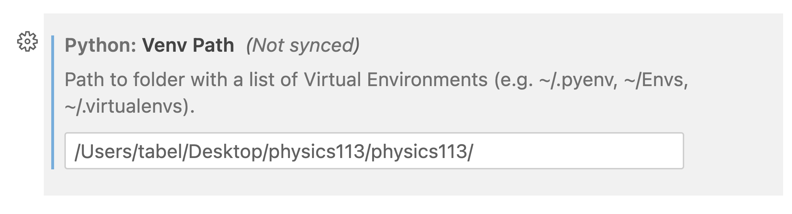

Please follow this quick guide on how to set up and use a virtual environment in Python, install specific Python versions, manage your dependencies with a requirements file, and use pip to install packages. This guide assumes that you have Python installed on your machine and you are comfortable with using the command line.
Working with Python Virtual Environments#
Python virtual environments, often referred to as venv, allow developers to create isolated environments for each Python project. This isolation ensures that each project can have its own set of dependencies that do not interfere with other projects.
Setting up a Virtual Environment#
First, navigate to your project directory,
cd /path/to/your/project
or if it doesn’t exist yet create it and then switch into it,
mkdir ~/Desktop/physics113
cd ~/Desktop/physics113
Create a new virtual environment in your project directory:
python3 -m venv physics113
In the command above, physics113 is the name of your new virtual environment. You can name it as you wish.
Activating the Virtual Environment#
The virtual environment must be activated before use.
On Unix or MacOS, run:
source physics113/bin/activate
On Windows, run:
.\physics113\Scripts\activate
After running this command, your terminal prompt should change to indicate that you’re in a Python virtual environment.
Installing a Specific Python Version#
The virtual environment will use the Python version that was used to create it.
To install a specific version of Python, you would need to first install that version on your system. You can download specific Python versions from the Python downloads page. After you’ve installed the desired version, you can use it to create a virtual environment.
Managing Dependencies with a Requirements File#
A common practice in Python development is to manage project dependencies with a requirements file, typically named requirements.txt. This file lists all the Python packages that your project depends on.
You can create a requirements file in your project directory. In this file, list all your project’s dependencies along with their versions.
For example:
numpy==1.21.0
pandas==1.3.0
Save the file as requirements.txt.
Installing Packages with Pip#
Pip is a package installer for Python. You can use pip to install the dependencies listed in your requirements file.
First, make sure that your virtual environment is activated. Then, run the following command to install the packages:
pip install -r requirements.txt
This command will install all the packages listed in requirements.txt in your virtual environment.
Using the environment#
jupyter lab#
If you use jupyter lab as your environment you wil
want to install it also in the this venv.
So after making sure your venv is activated
cd ~/Desktop/physics113
.\physics113\Scripts\activate
and then just use pip
pip install jupyter
and then launch it
jupyter lab
Tell vscode about it#
In the vscode settings we add the path 
which then will allow us to easily select this kernel for any notebook or python files we may be working on.
Conclusion#
Python virtual environments are a powerful tool for managing project dependencies. By creating a virtual environment for each project, you can ensure that your project’s dependencies do not interfere with each other.
Pip and the requirements file make it easy to manage and install these dependencies. With these tools, you can quickly set up a new development environment or share your project with others.
On my machine#
If I create this venv environment
mkdir ~/Desktop/physics113
cd ~/Desktop/physics113
python3 -m venv physics113
source physics113/bin/activate
and then check with pip list of what is installed I get the following message
physics113> pip list
Package Version
---------- -------
pip 22.0.4
setuptools 58.1.0
WARNING: You are using pip version 22.0.4; however, version 23.1.2 is available.
You should consider upgrading via the '/Users/tabel/Desktop/physics113/physics113/bin/python3 -m pip install --upgrade pip' command.
and so I follow the suggestion and updated pip.
Now I can install the packages we typically need in this class:
pip install numpy matplotlib scipy
Or also include the packages needed for the GUI programming
pip install numpy matplotlib scipy pyqt6 pyside6 pyqtgraph pyopengl